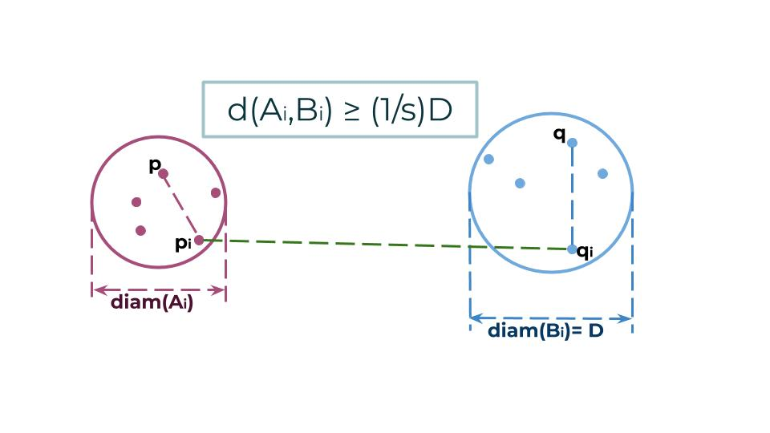

Paul B. Callahan and S. Rao Kosaraju devised the well-separated pair decomposition (WSPD). They showed that it can be used to solve a variety of distance problems. A WSPD is a partition of the (n choose 2) edges of the complete Euclidean graph into O(n) subsets. Each subset in this partition is represented by two subsets A and B of the point set S, such that:
All distances between points in A and points in B are approximately equal
All distances within the point set A are much smaller than distances between A and B
All distances within the point set B are much smaller than distances between A and B.
Thus, a WSPD can be regarded as a set of O(n) edges that approximates the dense complete Euclidean graph.
The WSPD can be used to obtain many optimal algorithms for solving problems such as: closest pair problem, the k-closest pairs problem, the all-nearest neighbors problem, and the approximate minimum spanning tree problem. On this site, we will mainly focus on the details of the WSPD and its application with reguards to constructing spanners.
DEFINITION
A sWSPD for P is a partition of the (n choose 2) edges of the complete graph on P into a collection of m well-separated pairs. Given two point sets A and B and a constant 0 < s < 1, we say (A, B) is s-separated if: max{diam(A), diam(B)} ≤ s∗dist(A, B) where dist(A, B)= min(a,b) ∈A×B‖a − b‖.
POINT-REGION QUADTREE
In the Point-Region quadtree (PR quadtree) each node either has exactly four children or is a leaf. The PR quadtree represents a collection of data points in two dimensions by decomposing the region containing the data points into four equal quadrants, subquadrants, and so on, until no leaf node contains more than a single point.
For the purpose of constructing sWSPD we use a compressed PR quadtree that can be constructed in O(nlogn).
A compressed PR quadtree is a quadtree that has two types of nodes: compressed and uncompressed.
Compressed nodes have a single child and represent the area of the quadrant around their child.
Uncompressed nodes are either leaves or split the pointset in their square into two or more subsets.
Compressed trees have linear size.
Construction of a quadtree on a set of points P:
Set k = |P|/10. Construct a disk D with a radius r such that D contains at least k points of the set P and
r(opt)(P, k) ≤ r ≤ 2r(opt)(P, k).
Let l = 2^(floor(log(r))) ≥ r/2. Compute a grid with the length of a side of each cell equal to l.
Find a cell c with the maximum number of points inside of it.
P(in) = P ∩ c, P(out) = P \ c.
l ≥ r/2 ⇒ |P(in)| ≥ k/25 = |P|/250.
l ≤ 2 r(opt)(P,k) ⇒ |P(in)| ≤ 4|P|/5.
Recursive call on P(in) and P(out).
In both trees create a node that corresponds to the cell c. In T(in), a result of a recursive call on P(in), it will ba a root node v(in). In T(out), a result of a recursive call on P(out), it will be a leaf node v(out). Hang the two nodes onto each other so that T(in) is a subtree of T(out):
If the new node is redundant, then compress it.
Otherwise, if v(out) is a compressed node, compute a new compressed node (assume this can be done in O(1)).
Given a PR quadtree T nodes u and v and given a desired amount of seperation s > 0, let P(u) denote the intersection beteween total set of points and the points within the PR quadtree square i.e the diameter of u. Simmilarly let P(v) denote the intersection beteween total set of points and the points within the PR quadtree square i.e the diameter of v. We can find WSPD for the Tensor product (⊗) of P(u) ⊗ P(v) using the algorithm below.
Δu = diameter of node u
Δv = diameter of node v
▢u = set of leaves in node u
▢v = set of leaves in node v
F = created s-WSPD
First call of the function is: WSPD(root, root, T, s)
WSPD(u, v, T, s)
{
if(∆u = 0 or ∆v = 0)
return 0;
else if(P(u) and P(v) is s-well separated)
return {{u, v}};
else if ∆u < ∆v
swap(u, v)
else if ∆u ≤ sd(▢u,▢v)
F = F ∪{(u,v)}
else
for each child w of u
WSPD(w, v, T, s)
}
PROOF OF CORRECTNESS
To prove our the correctness of the algorithm above, we apply 2 major concepts: a lemma and the packing argument (explained below). Using these key concepts, we show that the build time for a WSPD in 2D is O(nlog(n) + n/(s^2)).
Lemma
If (P(u),P(v)) ∈ P max{Δu, Δv} ≤ min{Δparent(u), Δparent(v)}
(using the previously defined symbols)
In order to get to nodes u and v we needed to go thought their previous nodes which are their parents. This implies that the parent(v) is not well seperated with u.
We know that no node can ever split apart more than s^2 times because we are in a 2D space. Hence, we can just look at each leaf node and how many times each parent directly above it was split. Looking at parent(u) we can observe the following:
In order for the parent(v) to have been split into v, ∆u < diameter(parent(v)).
In order for parent(u) to have split into u, parent(u) > parent(v).
Thus, ∆u < diam(parent(v)) < diam(parent(u)).
Packing Argument
Algorithm also uses a packing argument to divide up the nodes of the quadtree into s-WSPD. The number of circles of size Δ that are at k away from a given point is O(k^2/Δ^2) or in our case O(1/s^2)
A circle packing is an arrangement of circles inside a given boundary such that no two overlap and some (or all) of them are mutually tangent. The generalization to spheres is called a sphere packing. Tessellations of regular polygons correspond to particular circle packings (Williams 1979, pp. 35-41). There is a well-developed theory of circle packing in the context of discrete conformal mapping (Stephenson) (Wolfram).
Using these two concepts we have shown that total runtime of O(nlog(n) + n/(s^2)).
APPLICATION OF sWSPD ON SPANNERS
A spanner is a small-size graph such that the shortest path distance between any two points is roughly their Euclidean distance.
Definition. A graph G = (S, E) is a ε-spanner if
∀p,q ∈ S, dG(p,q) ≤ (1+ε)∥p−q∥.
Theorem.
∀s>0, in two dimensional space an s-spanner on S of size O(n) can be constructed in O(nlogn + n/(s^2)) time. Proof.
Set δ = s/16. Construct δ-WSPD F for S. For each pair (Ai,Bi) ∈ F, choose (pi,qi) ∈ Ai×Bi.
Let E = {(pi, qi) | 1 ≤ i ≤ |F|}. We use induction on the (n choose 2) distances to show that G = (S, E) is an s-spanner.

dG(p, q) = dG(p, pi) + ∥pi, qi∥ + dG(q, qi)
By the property of δ-WSPD,
∥p−pi∥ ≤ δ∥pi − qi∥.
By the inductive hypothesis,
dG(p,pi)≤(1+s)∥p−pi∥≤(1+s)δ∥pi−qi∥
Similarly, (1+s)∥q−qi∥≤(1+s)δ∥pi−qi∥. By triangle inequality,
Since δ ≤ s/16 ,it can be argued that ∥p−pi∥ < ∥p−q∥. Therefore
dG(p, q) ≤ dG(p, pi) + dG(q, qi) + ∥pi − qi∥
≤ 2(1+s)δ∥pi − qi∥ + ∥pi − qi∥
≤ (1+2(1+s)δ)(1+2δ)∥p − q∥
dG(p, q) ≤ (1 + s) ∥p − q∥
Q.E.D.
Other Applications of WSPD
Closest pair problem: given n points in metric space, find a pair of points with the smallest distance between them. -- sWSPD allows to solve it in O(nlog(n)).
All nearest neighbors problem: given n data-points and find the nearest neighbor for every one of those N points. -- with sWSPD can be solved in O(nlog(n)).
FAIR SPLIT TREES (FST)
Fair Split Trees (FST) are structurally the same as KD trees and share the same properties, i.e they are built with a set of axis splits along different axis. But invariants of the fair split trees are different:
Instead of splitting along a different axis and cycling, we will always split along the longest axis
Instead of splitting at the median (cutting our point set into two sets with equal number of points in each), we split at the “middle” (½ way between upper and lower edges of the box that is bouding a given set of points).
Construction of a Fair Split Tree on a set of points P: